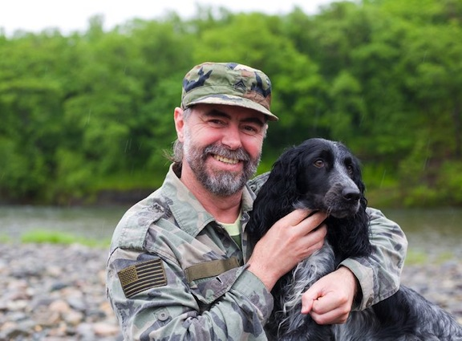

About Our Founder
Our organization was founded by John Smith, a passionate advocate for veterans and animal welfare. As a veteran himself, John understands the unique challenges faced by those who have served. With a background in social work and a lifelong love for animals, John established Pets4Vets in 2010. His vision is to create a world where every veteran has the opportunity to experience the unconditional love and support of a pet.
Our Mission
At Pets4Vets, our mission is to honor the bravery and dedication of our veterans by providing them with loyal, loving companions. We believe in the transformative power of the human-animal bond and are committed to enhancing the lives of veterans who have selflessly served our country. Through our carefully crafted matching process, we pair veterans with pets that offer unconditional love, support, and companionship, helping them overcome the challenges of post-service life.
Our program is designed to address the emotional and psychological needs of veterans, fostering a sense of purpose and fulfillment. We understand the profound impact a pet can have, from reducing symptoms of PTSD and depression to encouraging physical activity and social interaction. Every pet we place is given a second chance at life, often coming from shelters and rescue organizations, creating a symbiotic relationship that benefits both the veteran and the animal.
We are dedicated to creating lasting bonds and ensuring that each match is a perfect fit. Our support doesn’t end with the adoption; we provide ongoing assistance and resources to help our veterans and their new companions thrive. At Pets4Vets, we are more than an organization; we are a community committed to making a difference, one match at a time.
Our Values
- Compassion
- Dedication
- Respect
- Integrity
- Community
Statistics
| Year | Adoptions | Veterans Served |
|---|---|---|
| 2020 | 150 | 100 |
| 2021 | 200 | 150 |
| 2022 | 250 | 200 |